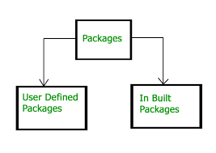

PACKAGE
What is a Java Package?
A package in Java is a mechanism for organizing related classes, interfaces, and
sub-packages. It provides a way to group related classes and interfaces together
so that they can be easily managed and reused in different programs.
Creating a Java Package
To create a Java package, you need to follow these steps:
1. Create a new directory with the name of your package.
2. Create your Java source files inside the directory
3. Add the package declaration at the top of each Java source file, using the following syntax:
ex:- package com.example.mypackage;
This declares that the classes in this file belong to the "mypackage" sub-package of the "com.example" package.
Using a Java Package
To use a Java package in your code, you need to follow these steps:
1. Import the package using the import statement at the top of your Java source file, like this:
import com.example.mypackage.*;
This imports all the classes and interfaces in the "mypackage" sub-package of the "com.example" package.
Use the classes and interfaces from the package in your code by referencing them using their fully qualified names, like this:
com.example.mypackage.MyClass obj = new com.example.mypackage.MyClass();
This creates a new instance of the "MyClass" class from the "mypackage" sub-package of the "com.example" package.
Types of Java Packages

1.Built-in packages: These are the packages that are provided by the Java development kit (JDK). They contain commonly used classes and interfaces that can be used directly in Java programs without the need for any additional coding. Some examples of built-in packages include java.lang, java.util, java.io, etc.
Example code:
import java.util.*;
public class MyProgram {
public static void main(String[] args) {
Scanner input = new Scanner(System.in);
System.out.print("Enter a number: ");
int num = input.nextInt();
System.out.println("The square of the number is: " + Math.pow(num, 2));
}
}

2.User defined package: User-defined packages: These are the packages that are created by the user to organize their own code into logical groups. They are created using the package keyword followed by the package name in the beginning of the source file. User-defined packages can contain multiple classes, interfaces, and sub-packages.
Example code:
file: com/example/myapp/MyClass.java
package com.example.myapp;
public class MyClass {
public void printMessage() {
System.out.println("Hello, world!");
}
}
In this example, we've created a package named com.example.myapp, and a class named MyClass inside it. The class contains a single
method printMessage() that prints the message "Hello, world!" to the console.
To use this class in another source file, we would import it using the following
statement:
import com.example.myapp.MyClass;
public class MyApp {
public static void main(String[] args) {
MyClass obj = new MyClass();
obj.printMessage();
}
}
In this code, we've imported the MyClass class from the com.example.myapp package,
and created an instance of the class named obj. We then call the printMessage()
method on the obj instance, which prints the message "Hello, world!" to the console.
Benefits of Using Java Packages
Organization: Packages provide a way to organize your code into logical groups, making it easier to manage and maintain.
Encapsulation: Packages help enforce encapsulation by providing a
way to hide implementation details from other parts of your code.
Reusability: Packages allow you to reuse code across different
programs, reducing development time and effort.
Name conflicts: Packages help avoid name conflicts by providing a way to use the
same class or interface name in different packages.